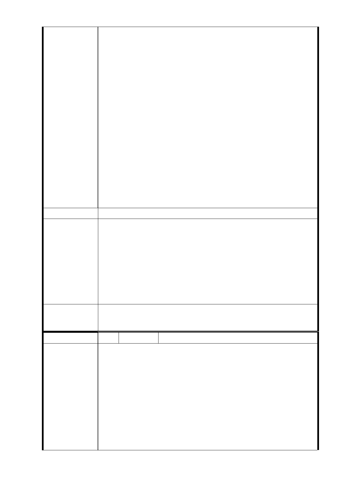

辦法：在一定時間內（例如 10 年）保證不發生輻射、龜
裂、漏水、剝落、水漬、蟲蛀、管線（包含水、電、瓦
斯、電話、有線及或衛星電視、寬頻網路等）故障不通
或得歸咎施工單位的重大瑕疵，否則要求恢復原樣或賠
償。
4、建議理由：依實際需要之優先選擇權。
辦法：原住戶持有兩戶或兩戶以上時，希望優先選擇相
隔鄰近戶，俾便就近照顧共同生活、維持家庭完整。
5、建議理由：希望增加「暫住房屋津貼」。
辦法：以現有坪數為計算基礎以不低於附近同年屋齡租
金自遷出月起按月補貼直至交屋當月為止。
6、建議理由：如果不能提供完全裝潢（指含已裝修之地板、
飾條、附熱水器之衛浴、附烤箱瓦斯爐之廚具及料理台、
空調）的新屋時，希望增加「裝潢房屋津貼」。
辦法：以交屋當時實際坪數為計算基礎，於交屋當月一
次性補助。
以上住戶權益保障部份必須載明於簽約書
建議辦法
1.編號 2、3、4-1 研析意見。
2.依臺北市舉辦公共工程拆遷補償自治條例第 11 條：「建
築物所有權人於限期內將建築物騰空點交予主管機關
市 府 回 應 者，發給拆遷補償費或拆遷處理費百分之六十之獎勵金。
意 見 逾期騰空點交者，不發給獎勵金。」故土地開發無「暫住
房屋津貼」及「裝潢房屋津貼」，另前述費用亦非主要計
畫、細部計畫變更案及都市計畫審議範疇。
委 員 會 決 議 同「市府回應意見」。
編 號 19 陳情人 松友里何禮欽里長（R04 捷二）
陳情書
各位都市計畫委員會的委員們：
大家好！我是信義區松友里里長何禮欽，本里位在信義
路 6 段 50 －70 號間，已經被捷運局規劃為信義線東延段
陳
情
理
由
R04 車站南側聯合開發基地，準備日後由市府拆屋整地開發
改建大樓。然而經捷運局幾次說明會後，本基地全體住戶對
市府所擬定的都市計畫變更案卻大失所望！
捷運局的說法大概是「您目前的房價是多少，改建好後
房價會加倍，所以分到的坪數雖然小於現在，但你們還是不
吃虧。」天阿！里民想要的是一個單純能住的家，而不是劃
- 100 -